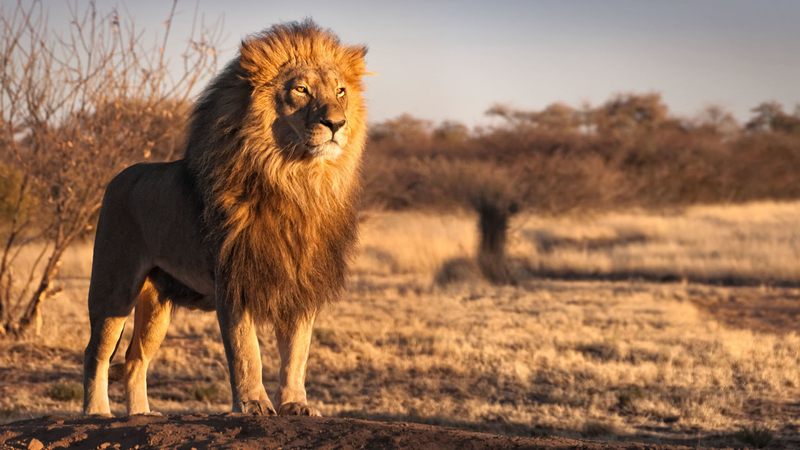
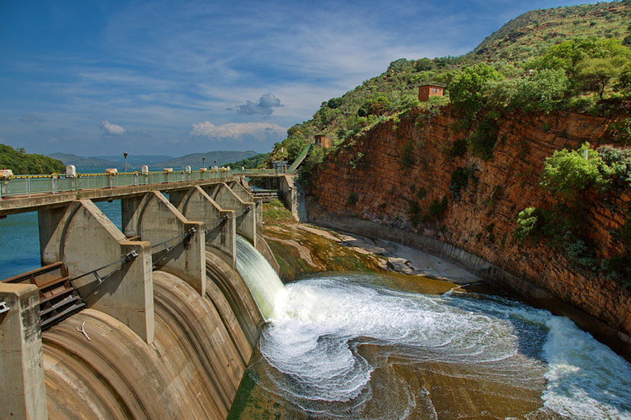
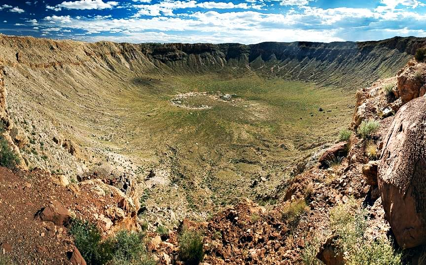

Western Cape
Eastern Cape
KwaZulu-Natal
Mpumalanga
Limpopo


South Africa is a country on the southernmost tip of the African continent, marked by several distinct ecosystems. The country is also known for its inland safari destination, the Kruger National Park which is populated by big game. The Western Cape offers beaches, lush winelands around Stellenbosch and Paarl, craggy cliffs at the Cape of Good Hope, forest and lagoons along the Garden Route, and the city of Cape Town, beneath flat-topped Table Mountain. The stark northwestern Kalahari is a semi-arid savannah that’s home to leopards, cheetahs and several game reserves. In the KwaZulu-Natal province lies the Drakensberg Mountains and the Amphitheatre, a dramatic semicircular cliff with the Tugela Falls at the top. Durban’s Golden Mile has a refurbished promenade and is famous for its surfing beaches. Major urban areas include Johannesburg and the township of Soweto, where Nelson Mandela worked to end apartheid. Northeastern Sun City is a huge resort complex of casinos and golf courses. Capital Pretoria features key historic Transvaal sites such as the Voortrekker Monument and Kruger House.
There are 9 provinces, namely:
|
|
 | ||
Western Cape |
Eastern Cape |
KwaZulu-Natal |
Mpumalanga |
Limpopo |
 |
 |  |  |
Gauteng |
North-West |
Free State |
Northern Cape |